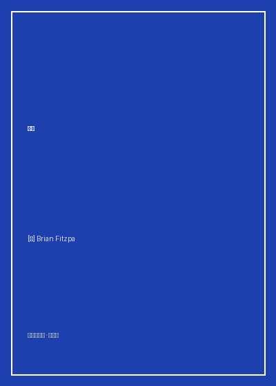

进化

总体观点
《进化》（Evolution: The Triumph of an Idea）是当代全球最具影响力的科学普及作家卡尔·齐默（Carl Zimmer）为纪念达尔文《物种起源》出版而撰写的生命科学传世杰作。该书伴随美国公共广播电视网（PBS）同名八集科学纪录片同步推出，被公认为向大众阐释演化生物学全貌最权威、最生动、最气势磅礴的科普经典。
卡尔·齐默以扣人心弦的非虚构叙事笔法，回溯了查尔斯·达尔文搭乘贝格尔号环球航行的历史足迹，生动展现了‘自然选择与物种演化’这一颠覆性学说如何在神创论铁板一块的维多利亚时代破土而出。全书横跨四十亿年地质年代，从生命的单细胞源头、寒武纪生命大爆发、鲸鱼祖先重返海洋的骨骼变迁，到现代实验室中细菌对抗生素的实时演化与人类自身的演化命运，为读者呈现了一幅壮丽恢弘的生命长卷。
核心观点
-
1. 自然选择：无意识的生存竞争雕刻出惊人的精妙设计
没有超自然的造物主在提前规划蓝图，细微的随机基因突变在严酷的环境淘汰压力下积累，创造出自然界巧夺天工的生物适应性。
加拉帕戈斯群岛上的地雀在遭遇大旱后，只有喙型粗壮厚实的个体能够夹碎坚硬种籽存活繁衍，仅仅两代之间种群平均喙深即发生显著进化。 -
2. 过渡化石的实证：抹平生命大类之间的‘演化断层’
古生物学不断发现形态兼具两大生物类群特征的过渡型化石，确凿证实了所有生命共享一个共同祖先。
从巴基斯坦发现的巴基鲸、陆行鲸到罗德侯鲸化石，清晰还原了偶蹄目哺乳动物如何在一千万年间逐渐退化后肢、演化出尾鳍并重返大洋。 -
3. 性选择的力量：美与繁衍竞争带来的极端演化
演化的驱动力不仅是‘活下去’，更是‘留下后代’；雄性为了争夺配偶青睐进化出看似累赘但证明自身基因优秀的绚丽性征。
雄孔雀耗费巨大能量拖着沉重笨拙的开屏尾羽，虽然增加了被天敌捕食的风险，却因雌孔雀的偏好而成为基因传递的无敌通行证。 -
4. 协同演化与军备竞赛：红皇后假说在生态系统中的运转
生物不仅要适应无机自然环境，更在与捕食者、猎物、寄生虫的永恒博弈中被迫加速奔跑，‘为了停留在原地，必须全力奔跑’。
粗皮蝾螈体内分泌出足以毒死数十个人的剧毒河豚毒素，而唯一捕食它的束带蛇体内则演化出了抵抗该毒素的突变受体，两者不断升级。 -
5. 演化视角下的现代医学与第六次大灭绝反思
细菌耐药性、癌症细胞的微演化以及人类文明对生物多样性的毁灭性破坏，证明演化并非过去的历史，而是当下决定人类存亡的现实。
医院ICU病房中抗生素滥用促成了‘超级超级细菌’的演化筛选，人类必须基于演化博弈论设计新的抑菌策略而非单纯盲目加重药量。
全书结构
-
第一部分 达尔文的革命：自然选择学说的诞生与抗争
详述达尔文乘坐贝格尔号五年的考察冒险，在加拉帕戈斯群岛与潘帕斯草原的化石发现如何催生演化学说。
达尔文在伦敦书房中隐忍二十余年迟迟不敢发表手稿，直到收到华莱士从马来群岛寄来的惊人相似论文，才决定联合发表。 -
第二部分 化石记录的惊雷：从寒武纪大爆发到生命登陆
穿越前寒武纪黏菌垫到澄江动物群、伯吉斯页岩，见证三叶虫、奇虾的繁衍，以及鱼类爬上陆地演化为四足动物的史诗。
提塔利克鱼（Tiktaalik）化石拥有鱼鳃却长着类似手腕的鳍骨，完美填补了肉鳍鱼类与早期两栖动物之间的关键空白。 -
第三部分 演化的微观引擎：基因突变、漂变与生命之树
结合孟德尔遗传定律与沃森-克里克DNA双螺旋发现，揭示现代综合进化论如何在分子层面解释生命演变机制。
通过比较人类与黑猩猩基因组，发现两者同源性高达98.8%，微小的调控基因差异造就了脑容量与语言中枢的飞跃。 -
第四部分 协同进化与性选择：繁衍狂想与致命军备竞赛
剖析兰花与特定传粉昆虫的专一性协同进化，以及动物界中雄性炫耀、求偶舞蹈与雌性挑剔的演化力学。
马达加斯加彗星兰拥有长达三十厘米的花距，达尔文预言必定存在一种长有同样长度喙管的蛾类，数十年后天蛾终于被证实存在。 -
第五部分 人类的起源与未来：第六次大灭绝前夜的演化反思
从南方古猿阿法种、直立人到现代智人走出非洲的历程，探讨人类活动如何重塑全球演化速度与物种消亡危机。
人类对全球气候的改造与生境破碎化正在以千倍于自然背景的速率抹去物种，作者警示人类必须敬畏这一四十亿年演化奇迹。